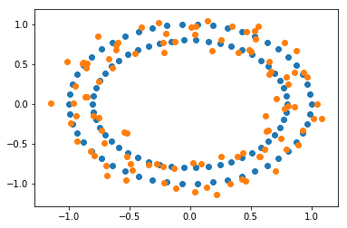
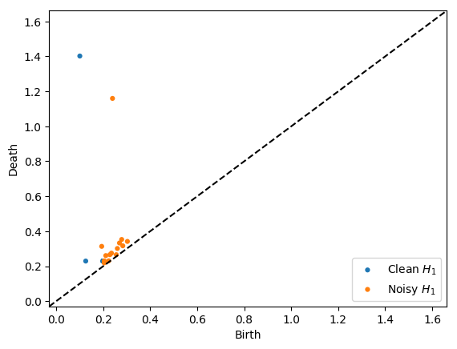
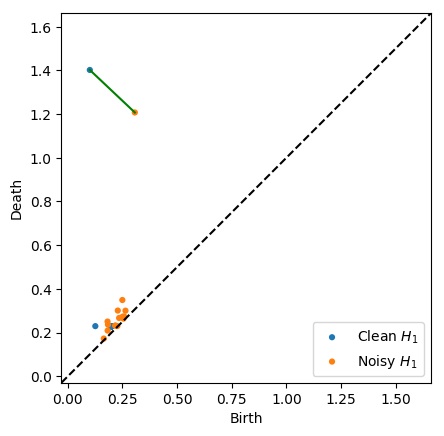

Distances¶
For this example notebook, we’ll need to install Ripser.py to create the persistence diagrams:
pip install Cython ripser
In [2]:
from sklearn import datasets
import persim
import persim.plot
import ripser
import matplotlib.pyplot as plt
In [3]:
data_clean = datasets.make_circles()[0]
data_noisy = datasets.make_circles(noise=0.1)[0]
In [4]:
plt.scatter(data_clean[:,0], data_clean[:,1], label="clean data")
plt.scatter(data_noisy[:,0], data_noisy[:,1], label="noisy data")
Out[4]:
<matplotlib.collections.PathCollection at 0x113b0a4e0>

Generate \(H_1\) diagrams for each of the data sets¶
In [5]:
dgm_clean = ripser.ripser(data_clean)['dgms'][1]
dgm_noisy = ripser.ripser(data_noisy)['dgms'][1]
In [6]:
ripser.plot_dgms([dgm_clean, dgm_noisy] , labels=['Clean $H_1$', 'Noisy $H_1$'])

Compute and visualize Bottleneck distance¶
The bottleneck function has the option of returning the matching
when the parameter matching is set to True. With the returned
data, we can use the plot.bottleneck_matching function to visualize
which persistence points contributed to the distance.
In [7]:
distance_bottleneck, (matching, D) = persim.bottleneck(dgm_clean, dgm_noisy, matching=True)
In [11]:
persim.plot.bottleneck_matching(dgm_clean, dgm_noisy, matching, D, labels=['Clean $H_1$', 'Noisy $H_1$'])

The default option of matching=False will return just the distance
if that is all you’re interested in.
In [12]:
persim.bottleneck(dgm_clean, dgm_noisy)
Out[12]:
0.24245107173919678
Sliced Wasserstein distance¶
Sliced Wasserstein Kernels for persistence diagrams were introduced by Carriere et al, 2017 and implemented by Alice Patania.
In [14]:
persim.sliced_wasserstein(dgm_clean, dgm_noisy)
Out[14]:
1.034281047579809
Heat Kernel Distance¶
We also implement the heat kernel distance
In [15]:
persim.heat(dgm_clean, dgm_noisy)
Out[15]:
0.28431455128208605
The parameter sigma controls …
In [17]:
persim.heat(dgm_clean, dgm_noisy, sigma=0.1), persim.heat(dgm_clean, dgm_noisy, sigma=1), persim.heat(dgm_clean, dgm_noisy, sigma=10)
Out[17]:
(0.9452992394565936, 0.12581612617123678, 0.013535132715043233)
In [ ]: